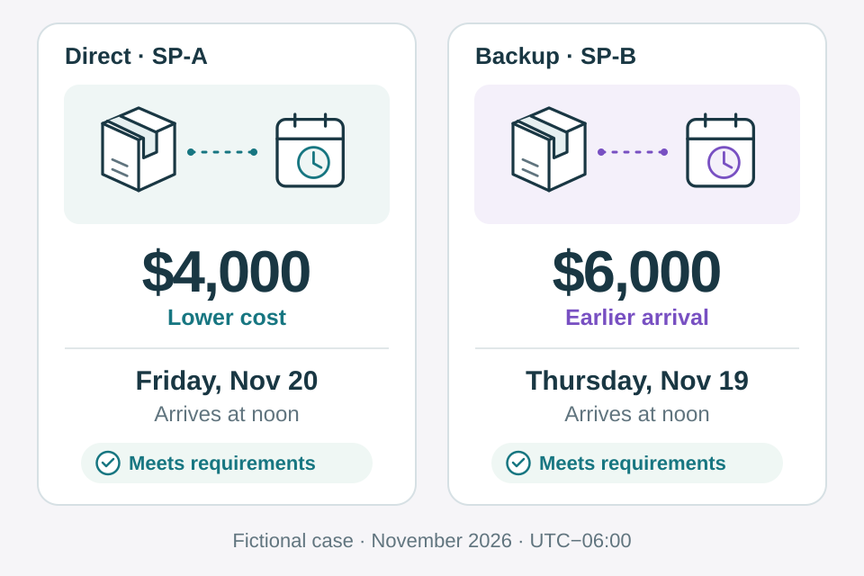
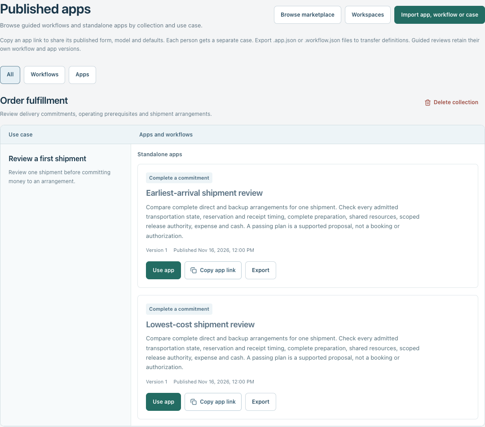
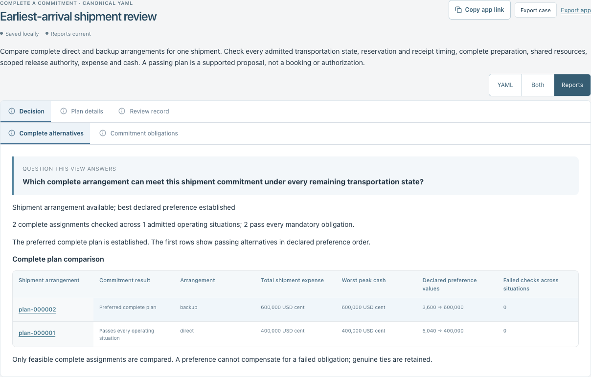
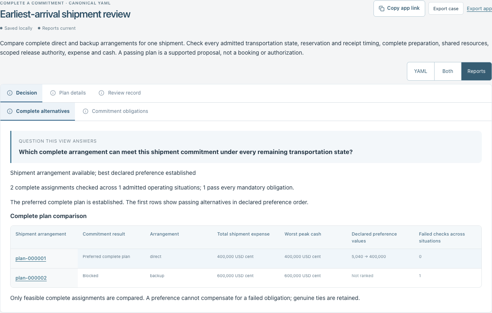

A supplier needs to deliver 100 cases of goods within a receiving window, from Thursday at noon through Friday at 5 p.m. Two shipment arrangements meet the recorded requirements. One costs less; the other arrives earlier. Which should the team prefer?


Decision Lab checks proposed arrangements against the requirements a team has recorded. It identifies which arrangements pass, then compares those using a priority the business has chosen. People supply and review the shipment information; the app calculates the consequences of those recorded facts and rules.
Here, both arrivals fit the receiving window. The tradeoff is one day earlier for $2,000 more. We use two configured reviews to show how the same facts produce different recommendations when the business priority changes.
This fictional example is informed by supplier-onboarding requirements. Its quotes, dates, readiness records and permissions are supplied teaching inputs. The full sources and scope are at the end.
A shared reference: the shipment review.
The review connects three responsibilities. The same person may hold more than one role, but the responsibilities remain distinct.
- App authorDefine the review.Configure the requirements and the business’s chosen priority.
- Case workerReview a shipment.Enter or import its facts, calculate, and examine the passing arrangements.
- Business ownersDecide and carry it out.Confirm the applicable priority, obtain approvals, and arrange the shipment.
This article follows the author’s configuration and the worker’s comparison. The business still owns the decision and the work needed to execute it.
How the parts fit together.
An app here is a configured review within Decision Lab. These four terms describe how a reusable method becomes a report for a particular shipment:
- TemplateA reusable checking structure: Complete a commitment.
- Configured appShipment rules plus a priority, such as lowest expense.
- CaseA saved review record for one shipment, including its options, dates, quotes and records.
- ReportWhich recorded arrangements pass and which the priority prefers.
View the wider shipment process
The full process also includes gathering evidence, investigating uncertainty and obtaining operating approvals. The comparison in this article focuses on comparing complete plans and choosing a proposal. The optional reference workflow later shows how evidence and verification can connect to that review.

On a small screen, scroll sideways to follow the process.
Plans and arrangements.
A shipment plan describes the intended movement of goods through a chosen shipping location, or ship point, on stated dates at a stated cost. Its arrangement connects the work, people, resources, permissions and dependencies needed to carry it out.
Those connections change as work progresses or conditions change. The app evaluates the recorded snapshot. When a quote, record, resource or permission changes, update the case and calculate again. See The Arrangement Problem in Human Decisions.
Start with one shared shipment.
The order contains 100 cases. Two complete arrangements are already supplied; SP-A and SP-B are fictional identifiers for their shipping locations. Each quoted expense includes its packing, release and freight costs.
| Arrangement | Shipment expense | Arrival |
|---|---|---|
| Direct, through SP-A | $4,000 | Friday, November 20, 2026 at noon |
| Backup, through SP-B | $6,000 | Thursday, November 19, 2026 at noon |
The receiving window runs from Thursday, November 19 at noon through Friday, November 20 at 5 p.m. All times use UTC−06:00. Both locations are recorded as transportation-registered for this shipment, and the supplied staff schedules, resources and permissions support either arrangement. The expense limit and available-cash limit are each $6,500.
These are reviewed inputs to the example: the app checks the listed alternatives using the records and travel times supplied. People remain responsible for obtaining current quotes, checking the operating records and arranging the actual shipment.
What gets checked?
The example supplies the facts needed for both arrangements to pass. The app checks six business questions against those recorded facts:
- Can it carry the complete order? The order is for 100 cases. Each arrangement has capacity for all 100; the example assumes those goods are available.
- Is the ship point registered for this shipment? The supplied records say both SP-A and SP-B are transportation-registered for the same order, revision, recipient, ship date and review profile. A portal listing alone would not establish that.
- Can the people and resources finish preparation? A capable packing worker has two hours available, followed by a capable release officer for 30 minutes. Their calendars and the packing bench have enough capacity, with no competing bookings recorded.
- Are the necessary permissions recorded? Each arrangement has recorded permission to select it and authorization for the responsible officer to release the shipment. Both cover this exact shipment and the relevant times. Available budget does not grant either permission.
- Can the timing work? Selection is set for Tuesday at 8 a.m., before the noon reservation cutoff. Packing and release finish before Wednesday’s departure. Both quoted arrivals meet the receipt deadline and fall within the receiving window.
- Does it fit the expense and cash limits? The complete quotes are $4,000 and $6,000, with no verification fee. Each stays within the recorded $6,500 expense limit and $6,500 peak-cash limit.
These are supplied teaching facts and configured checks. The result tells you whether the recorded arrangement passes them; it does not confirm that an external record is current or carry out the shipment.
See all 18 configured checks
- The arrangement has capacity for the complete accepted order.
- A transportation-registration record covers its ship point and this exact shipment in every retained operating state.
- The packing worker has the packing capability.
- The packing worker’s calendar covers the entire packing activity.
- The release officer has the release capability.
- The release officer’s calendar covers the entire release activity.
- Preparation and existing bookings together stay within each person’s and resource’s capacity.
- A shipment-specific permission to select the arrangement is valid at selection time.
- The release officer’s shipment-specific grant covers the complete release activity.
- The proposed selection time is not in the past.
- Any verification-fee payment is scheduled no later than selection.
- Selection occurs by the reservation cutoff.
- Packing followed by final release finishes by departure.
- Arrival is no later than the required receipt time.
- Arrival falls within the receiving window.
- The complete arrangement fee plus the verification fee stay within the total-expense limit.
- The payment schedule stays within the peak-cash limit.
- A nonzero verification fee has a shipment-specific purchase grant and fits both its grant ceiling and the purchase cap.
The verification fee is $0 in this comparison. No paid verification purchase is needed, and its payment-time entry already satisfies the timing check. These two verification-related checks do not establish additional shipment readiness.
Passing, preferred and approved mean different things.
- Feasible: the arrangement passes every configured mandatory check for the operating situations recorded in the case.
- Preferred: it ranks first among the passing arrangements under the app’s declared priority.
- Approved: the relevant business owners have authorized the action. The report evaluates recorded permission conditions; business approval and shipment execution remain human responsibilities.
The calculation has two steps: check requirements, then rank the arrangements that pass. A preference cannot compensate for a failed requirement.

On a small screen, scroll sideways to follow both branches.
The author defines the priority.
App author
The business owner decides which priority should govern the review. The app author implements it in a reusable app. For this controlled comparison, the author configures two apps from the same Complete a commitment template, with the same shipment rules and mandatory checks:
- Lowest-cost shipment review: prefer the lowest shipment expense.
- Earliest-arrival shipment review: prefer the earliest arrival; use expense to break arrival-time ties.
The arrival-first rule gives any earlier passing arrival priority over a later one; expense only breaks ties between equal arrival times. It expresses the business’s chosen priority. It does not calculate how much an extra day is worth.
Two apps let us isolate the effect of that rule. In ordinary use, a worker uses the review whose published rules match the agreed business priority. The worker changes the shipment facts within that review.
The current authoring screen shows the configuration in YAML, a structured text format. In the screenshot, the preference section says to minimize arrival time first and expense second. The rest of the shipment rules stay the same.

Inspect or change the actual configuration
The current authoring interface exposes the model as canonical YAML. The cost-first module.preference minimizes finance.expense. The arrival-first version minimizes derived.arrival, followed by finance.expense.
Download an editable model below. In Decision Lab, choose Workspaces → Open file, open its .model.yaml file, and wait for Reports current. Review the complete model before choosing Publish app, acknowledging the review, and selecting Publish reviewed commitment app.
Hand over two published apps.
App author → Case worker
Publishing makes a fixed version of the configured review available for case work. Workers can update a shipment’s facts within its defined input fields. Changing the published rules requires another app or release; existing cases retain the exact definition they started with.
Both example apps are version 1. The screenshot shows their entries in Published apps. The beginner exercise below imports a prefilled working case with its exact app included, so you can start directly with a report.


How these app packages were prepared
These two downloadable apps were packaged with the Decision Lab SDK from the models shown here, giving the comparison repeatable identities. Import their .app.json files through Published apps → Import app, workflow or case to see the same two entries, then choose Use app to create a case with the supplied defaults.
The worker runs the same case in both.
Case worker
The case worker is the person reviewing a particular shipment. For this exercise, the working-case downloads already contain the fictional shipment facts. A real review requires entering or importing the shipment’s information and checking that it is current and appropriate.
Open each working case, select the Reports layout, then Decision → Complete alternatives. These are separate cases tied to their respective apps, with identical initial shipment facts. Both reports find both arrangements feasible; the preferred arrangement changes with the declared priority:
| What we compare | Cost-first app | Arrival-first app |
|---|---|---|
| Case inputs | Identical shipment snapshot | |
| Mandatory checks | Same 18 checks; both arrangements pass | |
| Author’s priority | Lowest expense | Earliest arrival; expense breaks ties |
| Preferred arrangement | Direct · $4,000 · Friday | Backup · $6,000 · Thursday |
Read the report in four steps.
- Find the alternatives. The rows identify the direct and backup arrangements. Labels such as
plan-000001are report identifiers. - Check feasibility. The summary says two complete assignments were checked across one operating situation: the two supplied arrangements, with both locations recorded as registered. Both pass the mandatory checks.
- Find the preferred row. Preferred complete plan marks the arrangement ranked first under this app’s priority. Failed checks across situations is zero for both arrangements.
- Translate the units.
400,000 USD centmeans $4,000. Arrival times count minutes from Tuesday, November 17 at midnight, UTC−06:00. In the arrival-first report,3,600 → 600,000means Thursday at noon, then $6,000 expense;5,040 → 400,000means Friday at noon, then $4,000.
Worst peak cash is the largest cash amount required at any point in the recorded arrangement. Here it equals the quoted expense. Open either screenshot at full size to inspect the report labels and values.
Cost-first app
Direct · $4,000 · Friday

Arrival-first app
Backup · $6,000 · Thursday


Explain the recommendation.
The cost-first app favors saving $2,000. The arrival-first app favors receiving the shipment one day earlier. Both arrivals meet the deadline. The business owner still needs a reason to give one objective priority—for example, a documented operating need for the earlier receipt.
This example makes the price-and-time tradeoff visible. It supplies no monetary benefit for the extra day, so the report cannot establish that paying $2,000 more creates $2,000 of business value. The owner chooses the applicable policy; the worker reviews its result and the conditions supporting it.
Try the comparison.
Start with the prefilled working cases. Each includes its published app and the fictional shipment facts, so you can reproduce the comparison without configuring a review.
- Download the first case. Save the cost-first working case.
- Import it. Open Decision Lab. Choose Published apps → Import app, workflow or case and select the downloaded file.
- Read the result. Wait for Reports current, choose the Reports layout, then Decision → Complete alternatives. Both arrangements pass; the direct arrangement is preferred at $4,000.
- Compare the other priority. Download the arrival-first working case. Return to Published apps, import it the same way, and open its report. Both arrangements still pass; the backup arrangement is preferred for its Thursday arrival.
The first report answers “Which passing arrangement costs least?” The second answers “Which passing arrangement arrives earliest?” The shipment facts are identical.
Start a fresh case or inspect the author’s files
To create a fresh case with the supplied defaults, import a published app below and choose Use app. To inspect or change the author’s rules, download an editable model and open it through Workspaces → Open file. A model is the structured definition of the review and its worked inputs.
- Lowest-cost shipment review: published app (.app.json) · editable model (.model.yaml).
- Earliest-arrival shipment review: published app (.app.json) · editable model (.model.yaml).
Download the shared case inputs (.yaml) to inspect the common snapshot or use it in either app’s case editor. This file contains case values. The beginner steps above use complete working-case exports.
Change a fact: a $5,000 expense limit.
The original comparison holds the facts fixed and changes the priority. Now try a separate exercise: keep the arrival-first app and its priority, but lower this shipment’s expense limit from $6,500 to $5,000. Its cash limit stays at $6,500.
- In the arrival-first working case, choose the Both layout to see the editor beside the reports.
- In Canonical commitment case YAML, find
expenseLimit: 650000underparametersand change it toexpenseLimit: 500000. These amounts are in cents. Leave the other values as supplied. - Wait for Reports current. Valid YAML updates the report automatically; Run calculation also runs it again. Return to Reports → Decision → Complete alternatives.
The $6,000 backup arrangement now fails the expense requirement. The $4,000 direct arrangement still passes and becomes preferred, even though the app’s priority is still earliest arrival. Requirements determine which options are available; the priority ranks those that remain.
To inspect the completed exercise directly, download the $5,000-limit working case and import it using the same steps above. Restore expenseLimit: 650000, or reimport the original arrival-first case, to return to the original comparison.
Expense-limit exercise
Only the $4,000 arrangement passes


Reusable solutions behind the review.
You have now seen one reusable approach: check complete arrangements against their requirements, then compare those that pass. A pattern describes a solution to a recurring problem and the conditions that make it useful. The template provides a configurable way to apply that approach; the two apps supply shipment-specific rules and priorities.
Other reviews can reuse that structure with different domain concepts and requirements. Several patterns can also be stitched together into a workflow: connected reviews whose findings feed the next question. See Pattern Languages for Human Decisions.
Why shared meanings and interpretation matter
Shared meanings make reuse work.
The expense limit, available cash and permission to spend each have a different role in this shipment. Ontology engineering makes those concepts and relationships explicit, so findings keep their meaning as they move between reviews—including which shipment, order revision, dates and conditions they concern. See Ontology Engineering for Human Decisions.
Interpret the statement before relying on it.
“The ship point is set up” might mean that a portal listing exists, transportation registration is complete, or someone considers the location operational. Computational hermeneutics helps people make that interpretation explicit and examine which conclusions it supports. People clarify the statement and preserve its context; the app helps inspect the consequences recorded in the model. See Computational Hermeneutics for Human Decisions.
Continue with the full evidence and verification workflow
This comparison isolates requirements and ranking with both ship points recorded as registered. The original reference workflow uses a different fictional case: the direct ship point’s registration is uncertain, and both plans have the same arrival time. It connects three reusable solutions:
- Review ship-point registration: interpret the reviewed records and keep every registration state compatible with them. A portal listing can leave the registration question unresolved.
- Plan this shipment before reservation: assess the complete arrangements against timing, readiness, resource, expense, cash and authority requirements in those states.
- Choose verification before reserving this shipment: compare committing now with checking first, including the check’s fee and whether a supported response remains available in time. Learning whether a ship point is registered and arranging its registration are different activities; this review assesses the first.
The evidence review supplies the remaining operating states to planning. Planning supplies the responses available after verification to the learning review. Shared shipment scope, time, units and reviewed handoffs connect the findings. A pattern can inform several apps, and an app can draw on several patterns.
Its learning app evaluates risk-neutral expected monetary payoff. Changing the planner’s ranking rule alone does not make that verification recommendation optimize arrival time. Combining a variant with the workflow requires reviewing its questions, meanings, bindings and connected objectives.
- Workflow authoring reference: configure questions, responsibilities, handoffs and publication.
- Evidence and verification reference: review records, blockers, useful checks and the decision brief.
- Business process chart: place these reviews within the wider shipment process.